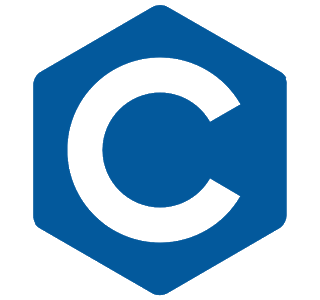

Aula de GIT
GIT Programming - IFSULDEMINAS

Equipe 1
Linguagem: C 2023
C é uma linguagem de programação compilada de propósito geral, estruturada, imperativa, procedural, padronizada pela Organização Internacional para Padronização, criada em 1972 por Dennis Ritchie na empresa AT&T Bell Labs para desenvolvimento do sistema operacional Unix.

Matheus e Willian
Linguagem: Java
Pricipais Aplicações: Java é uma linguagem de programação amplamente usada para codificar aplicações Web. Ela tem sido uma escolha popular entre os desenvolvedores há mais de duas décadas, com milhões de aplicações Java em uso hoje. Java é uma linguagem multiplataforma, orientada a objetos e centrada em rede que pode ser usada como uma plataforma em si. É uma linguagem de programação rápida, segura e confiável para codificar tudo, desde aplicações móveis e software empresarial até aplicações de big data e tecnologias do servidor.
Comentários: Linguagem muito poderosa embora simples, Permite portabilidade, Muito usada em programação em rede, Server Programming Aplicações de e-commerce, e-business e Aplicações para acesso via Internet, intranet, etc.
Exemplos: package p2.exemplos; /* * O primeiro programa em Java: Hello World * Autor: Jacques Sauvé */ // Todo programa tem um ponto de entrada: o "método" main de alguma "classe" public class Hello { public static void main(String[] args) { System.out.println("Hello, world!"); } }

Andre - Marcelo
Linguagem: Python
Pricipais Aplicações: Desenvolvimento web, análise de dados, automação de tarefas, inteligência artificial e aprendizado de máquina.
Comentários: Python é uma linguagem de programação versátil, fácil de aprender e com uma grande comunidade de usuários e desenvolvedores. É uma ótima escolha para quem está começando a programar e também para projetos mais complexos.
Exemplos: Desenvolvimento de websites e aplicações web com frameworks como Django e Flask.
Análise de dados e ciência de dados com bibliotecas como pandas, numpy e matplotlib.

Marcos & Augusto
Linguagem: PHP
Pricipais Aplicações: Desenvolvimento web, Sistemas de gerenciamento de conteúdo (CMS), Sistemas de comércio eletrônico, Aplicações de processamento de formulários, Aplicações de chat em tempo real, Sistemas de gerenciamento de banco de dados.
Comentários: É uma linguagem de programação popular e amplamente usada na web. O PHP tem sido uma das principais linguagens para desenvolvimento web, e é especialmente útil para construir aplicações dinâmicas baseadas em servidor, que processam dados e fornecem conteúdo personalizado para os usuários.
Exemplos: O PHP é amplamente utilizado para desenvolvimento de sites e aplicações web, incluindo e-commerce, blogs, fóruns, redes sociais, entre outros.

Tiago e Kléber
Linguagem: JavaScript
Principais Aplicações: JavaScript é uma linguagem de programação que é comumente usada para criar interatividade em páginas da web. Alguns exemplos de suas aplicações incluem: criação de animações, formulários dinâmicos, jogos, gráficos e efeitos visuais.
Comentários: JavaScript é uma das linguagens de programação mais populares do mundo. É uma linguagem de alto nível e interpretada, o que significa que os programas podem ser escritos e executados diretamente no navegador. Além disso, muitas bibliotecas e frameworks estão disponíveis para simplificar o processo de desenvolvimento de aplicativos.
Exemplos: Alguns exemplos de aplicativos que utilizam JavaScript incluem o Google Maps, o Facebook e o Twitter. Além disso, muitos sites de compras online usam JavaScript para criar recursos de carrinho de compras, validação de formulários e muito mais.